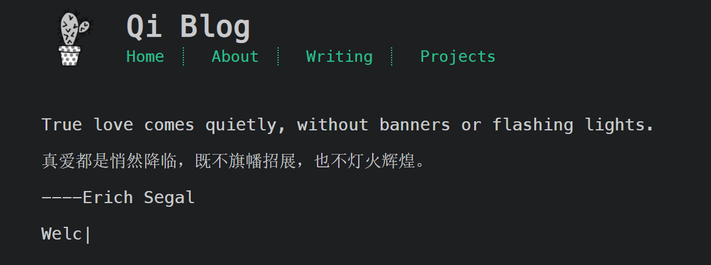

关于自己博客插件的使用
一、Typed的使用
Typed是一个可以实现页面文字打印机效果的插件，下面是在cactus主题中使用的方法：
- 在themes\cactus\layout_partial\scripts.ejs这个js文件中添加如下代码：
1 | <!-- Typed --> |
- 然后讲themes\cactus\layout\index.ejs中的代码改为如下：
- 在themes\cactus\source\js\main.js文件末尾加入以下代码：
- 添加刚才div和span的样式，在文件themes\cactus\source\css\style.styl中添加：
1 | .coding |
不同的样式需求可以自行修改
- 实现如下：

二、busuanzi计数脚本的使用
使用很简单
在themes\cactus\layout_partial\scripts.ejs添加：
1
<%- js('//busuanzi.ibruce.info/busuanzi/2.3/busuanzi.pure.mini.js') %>
在themes\cactus\layout\index.ejs中添加：
1
2<span id="busuanzi_container_site_pv">
<span id="busuanzi_value_site_pv">